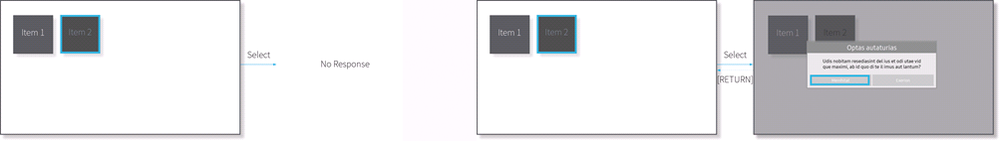

The Unavailable Status feature is used to show that a function is temporarily unavailable due to various circumstances.
Use this only when the state of an item can be changed by the user action.
Example: Items that can be available or unavailable depending on the state of the upper option or menu, Edit mode, etc.
An unavailable component must appear dimmed, but it can be focused on.
Items that are not supported by the system cannot be unavailable and should not be displayed on the screen.
Example: Features not supported depending on the model, additional features of apps that are not downloaded yet (such as rating), etc.
Unavailable items do not respond to user actions. (No Response)
However, when users need clear guidance, provide information and messages to enable users to switch the status.
Example: Unavailable Source, Settings item, etc.
